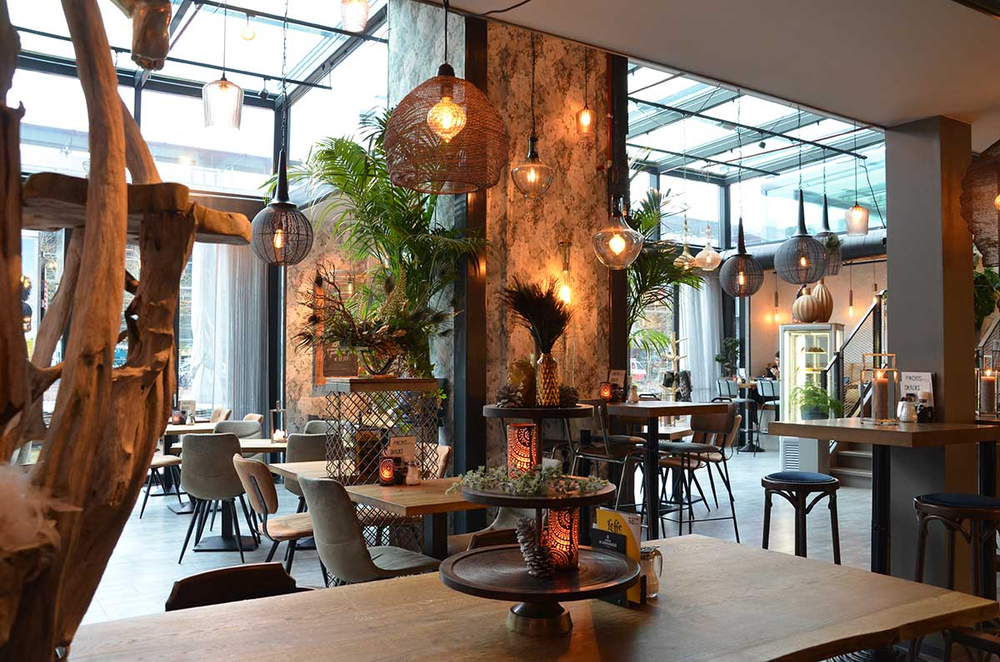
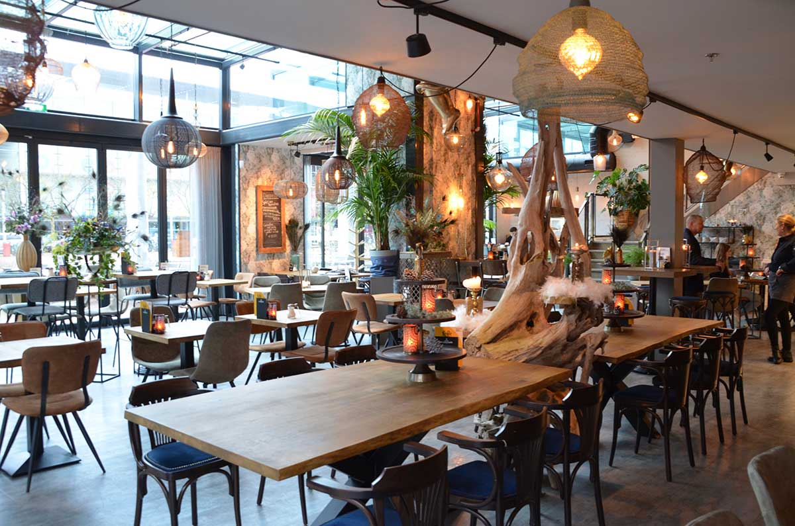
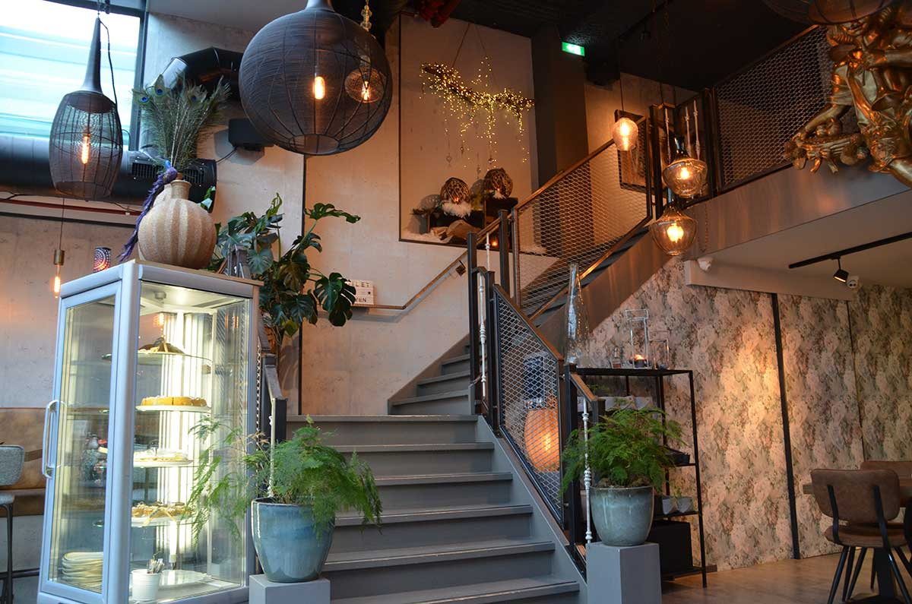
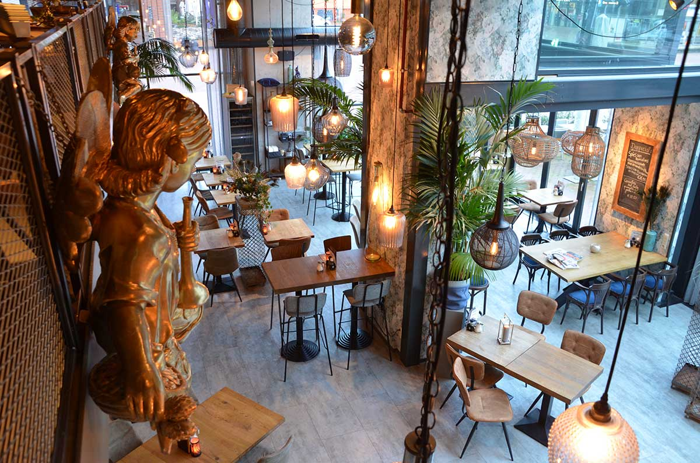
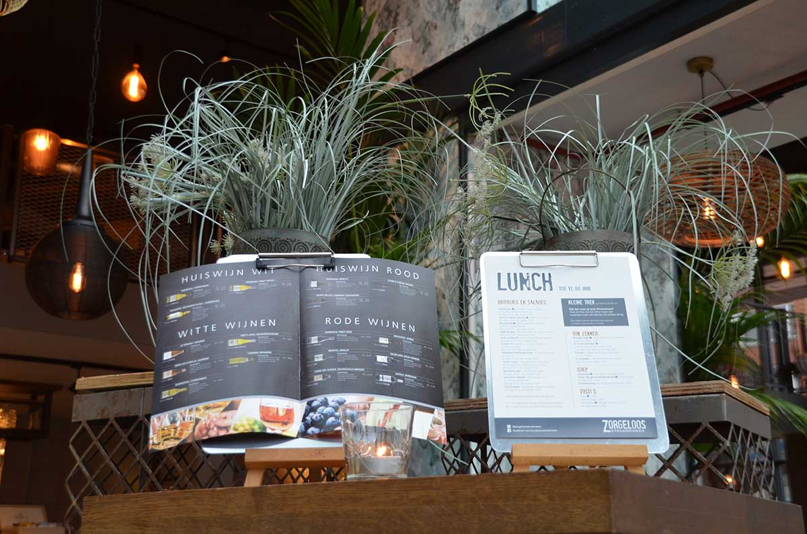

Lunchen
Even zitten tijdens het winkelen: een broodje, een salade of iets warms.

Lunch, diner en een groot terras aan het Stadsplein, midden in Stadshart Amstelveen.
Zorgeloos is de plek om even lekker te lunchen tijdens een dagje winkelen in Stadshart Amstelveen, heerlijk te dineren voorafgaand aan een theatervoorstelling, of om gewoon gezellig bij te kletsen met familie en vrienden onder het genot van een hapje en een drankje.
Even zitten tijdens het winkelen: een broodje, een salade of iets warms.
Van een klein gerecht tot een uitgebreid 3-gangendiner, ook mooi voor de voorstelling.
Met familie of vrienden, onder het genot van een hapje en een drankje.


Of het nu gaat om een klein lunchgerecht of een uitgebreid diner: de menukaart biedt voor elk wat wils. Alle gerechten worden met passie en liefde bereid. De kwaliteit van het eten en een gastvrije service in een gemoedelijke sfeer staan bij ons centraal.
Zorgeloos heeft ook een groot en gezellig terras, waar u als het weer het toelaat vanaf de vroege ochtend tot in de late avond van de zon kunt genieten.

Op rustiek brood, wit of bruin. Pistolet wit of bruin: meerprijs 1,00.

De eerste drie gerechten worden geserveerd met friet.
Met brood en boter.
Met friet.
Bestellingen worden per tafel en/of groep opgenomen en afgerekend.
Het is niet uitgesloten dat onze gerechten allergenen bevatten. Bent u ergens allergisch voor? Meld dit dan aan onze bediening.
“Aangename sfeer en fantastisch gegeten. De pinchos zijn een echte aanrader voor bij de borrel.”
Willem de Beuker
“Heerlijk gegeten, sfeervolle inrichting en gezellige bediening.”
Carla van Vliet
“Vandaag heerlijk geluncht met mijn vriendinnen en daarna vergaderd. Het interieur is stijlvol en sereen.”
Janine Blok
“Mooie gerechten, moest er wel even op wachten, maar net een nieuwe zaak... Het was het wachten meer dan waard. Toplocatie.”
Brenda de Zeeuw
“Thank voor het organiseren van mijn feest. De hapjes pinchos waren geweldig.”
Stefan Hoekstra
Reserveren is gewenst, maar binnenlopen kan ook. Online reserveren kan voor de komende dagen; wilt u vandaag nog komen, bel dan even.
Dagelijks van 10 tot 17 uur.
| Maandag | 10.00 – 18.00 |
|---|---|
| Dinsdag | 10.00 – 18.00 |
| Woensdag | 10.00 – 22.00 |
| Donderdag | 10.00 – 22.00 |
| Vrijdag | 10.00 – 22.00 |
| Zaterdag | 10.00 – 22.00 |
| Zondag | 10.00 – 22.00 |
Afhalen dagelijks van 10 tot 17 uur. Twijfelt u over de tijden op een bepaalde dag? Bel ons gerust.